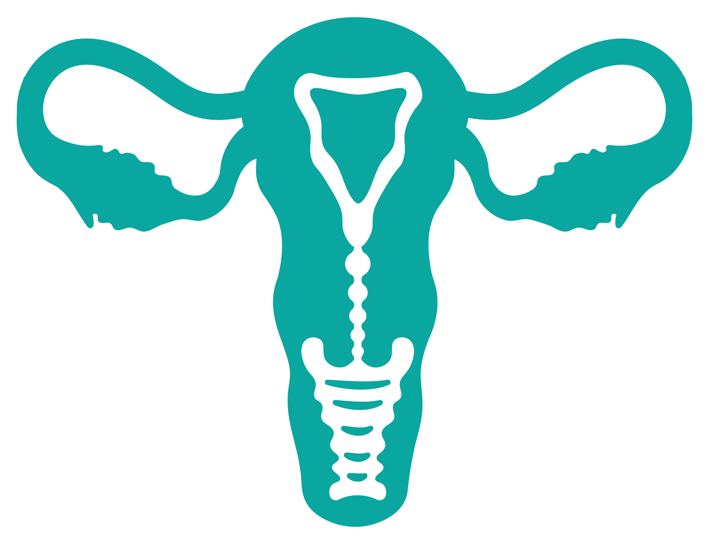

Bienvenida y bienvenido al Módulo 1. El Cáncer de Cuello Uterino (CCU) como problema de salud pública en México
Este módulo ofrece una visión general del problema, incluyendo datos epidemiológicos, barreras de acceso y estrategias normativas en México.

Competencias
Se espera que al finalizar el estudio de los temas, logres las siguientes competencias:
- General:
- Comprender la magnitud del cáncer de cuello uterino como problema de salud pública en México.
- Específicas:
- 1. Identificar los principales parámetros epidemiológicos del CCU en México.
- 2. Identificar las principales barreras en el acceso a la detección temprana y tratamiento oportuno del CCU en México.
- 3. Reconocer los principales factores de riesgo para el desarrollo del CCU.
- 4. Reconocer la implementación de los elementos de la estrategia 90-70-90 de la OMS en las acciones dentro del marco normativo para la prevención y control del CCU en México.